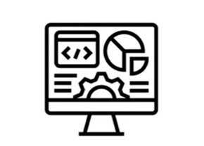

| Surveyig & Spatial Data | GIS Server | GIS Applications |
|  | ||
|
|
|
QGIS Training
SurveyingSurveying is closely related to the Earth, encompassing aspects from land property to roads, bridges, and buildings. We assist clients in collecting real-world data with high accuracy and precision. We provide location data using points, lines, and polygons, along with various attribute details that meet their specific requirements. Our team comprises highly qualified professionals.
|
Geospatial AnalysisSGeospatial analysis is used by many sectors, including commercial, government, academia, environmental, public health, and more. We help clients leverage geospatial analysis to solve problems, improve productivity, and increase locational awareness. Possible applications include:
|
Remote SensingWe specialize in processing, analyzing, and optimizing earth observation data. We have worked with various sensors and platforms, including Landsat, Sentinel, airborne sensors, LiDAR, and UAVs etc. Remote sensing allows us to:.
|
Spatial DatabaseSDesigning, building, and managing spatial databases with PostgreSQL/PostGIS is our strength. We build fully managed, cloud-based databases that leverage trigger functions, foreign data wrappers, vector tiles, network analysis, materialized views, and spatial relationships. With QGIS, we integrate some great features to work with PostGIS, such as:
|
Open Source GISSWe have been working almost exclusively with open source GIS for well over a decade. Free and open source (FOSS) GIS software is a feature rich and cost effective alternative to proprietary software. We develop solutions for desktop, web, and/or mobile with many FOSS GIS applications, such as:
|